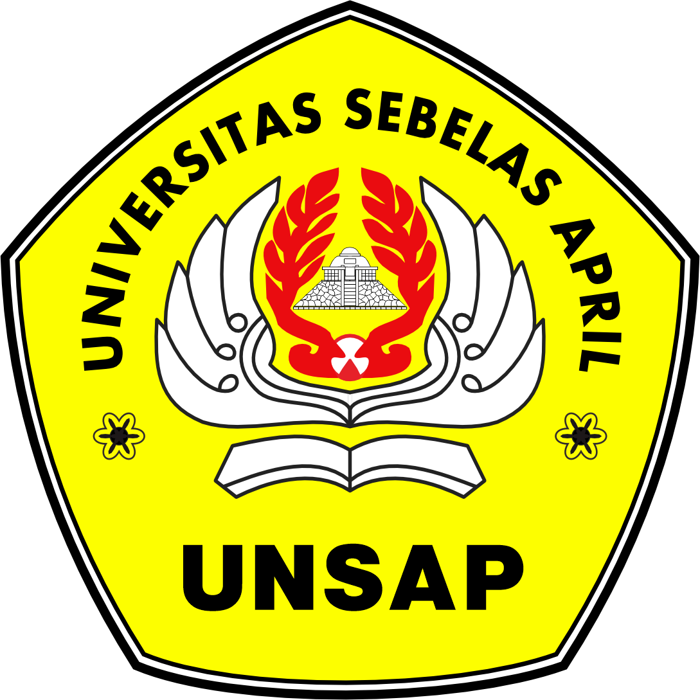

Sumedang
Dampak Negatif dan
Persoalan
Sosial Budaya Akibat
Perkembangan Teknologi
di Era Globalisasi
Struktur Presentasi
Alur pembahasan disusun dari konteks, dampak, persoalan sosial budaya, hingga solusi.
Identitas Presentasi
Sumedang
Pendahuluan
Teknologi adalah kekuatan sosial: ia membentuk cara manusia berinteraksi, berpikir, bekerja, dan membangun identitas.
Globalisasi mempercepat arus informasi
Berita, hiburan, tren, dan budaya global dapat masuk ke kehidupan masyarakat dalam hitungan detik.
Teknologi mengubah relasi sosial
Komunikasi tidak lagi hanya berlangsung secara langsung, tetapi juga melalui ruang digital dan platform media sosial.
Dampak tidak selalu positif
Kemudahan digital dapat memunculkan ketergantungan, konflik informasi, dan perubahan nilai budaya.
Pokok Masalah
Bagaimana perkembangan teknologi yang sangat pesat menimbulkan dampak negatif serta persoalan sosial budaya di era globalisasi?
Kerangka Analisis
Dampak teknologi dapat dipahami sebagai proses sebab-akibat antara kemajuan digital, perubahan perilaku, dan perubahan nilai sosial budaya.
Perkembangan Teknologi
Internet cepat, media sosial, e-commerce, aplikasi digital
Perubahan Perilaku
Cara komunikasi, cara belajar, pola konsumsi, akses hiburan
Dampak Sosial Budaya
Pergeseran nilai, relasi sosial, budaya lokal, etika digital
Landasan konseptual yang relevan
Teknologi sebagai ekstensi manusia
Media memperluas kemampuan manusia, tetapi juga mengubah pola hidup.
Masyarakat jaringan
Relasi sosial makin terhubung melalui sistem digital dan platform.
Kesenjangan digital
Akses dan kemampuan digital yang tidak merata menciptakan ketimpangan baru.
Dampak Negatif Perkembangan Teknologi
Dampak negatif bukan berarti teknologi harus ditolak, tetapi perlu dikelola agar tidak merusak kualitas kehidupan sosial.
Interaksi sosial menurun
Komunikasi tatap muka berkurang; hubungan sosial menjadi lebih dangkal.
Ketergantungan digital
Gawai, media sosial, dan game dapat mengganggu fokus, belajar, dan produktivitas.
Hoaks dan disinformasi
Informasi palsu menyebar cepat dan dapat memicu konflik sosial.
Perilaku konsumtif
Belanja digital dan iklan algoritmik mendorong pembelian berbasis keinginan.
Ancaman data pribadi
Risiko penipuan, pencurian identitas, dan penyalahgunaan informasi meningkat.
Menurunnya Interaksi Sosial dan Meningkatnya
Individualisme
Teknologi dapat membuat manusia terhubung secara digital, namun justru berjarak secara emosional dalam kehidupan nyata.
Gejala yang Tampak
- Percakapan langsung dalam keluarga berkurang.
- Relasi sosial menjadi singkat dan transaksional.
- Orang lebih fokus pada layar daripada lingkungan sekitar.
- Empati sosial melemah karena interaksi banyak terjadi lewat teks.
Implikasi Sosial Budaya
- Nilai gotong royong dan kebersamaan dapat melemah.
- Komunikasi menjadi rentan salah paham.
- Kepedulian terhadap lingkungan sosial menurun.
- Masyarakat lebih mudah terfragmentasi dalam kelompok digital.
Ketergantungan Teknologi dan Gangguan Produktivitas
Pemakaian teknologi secara berlebihan dapat menggeser teknologi dari alat bantu menjadi sumber gangguan.
Pola Ketergantungan
Paparan konten
notifikasi, video pendek, game
Dorongan penggunaan
ingin terus mengecek informasi
Dampak
fokus menurun, waktu belajar terganggu
Pengendalian yang Diperlukan
- Menentukan batas waktu penggunaan gawai.
- Mengutamakan teknologi untuk belajar dan produktivitas.
- Mengurangi notifikasi yang tidak penting.
- Membangun kebiasaan membaca, berdiskusi, dan aktivitas sosial nyata.
Hoaks, Disinformasi, dan Konflik Sosial
Arus informasi yang cepat membuat masyarakat harus memiliki kemampuan memilah informasi secara kritis.
Informasi tidak jelas
Judul sensasional, sumber tidak kredibel, potongan konteks.
Dibagikan cepat
Emosi lebih dominan daripada verifikasi fakta.
Konflik sosial
Muncul prasangka, ujaran kebencian, dan perpecahan opini.
Lunturnya Budaya Lokal dan Pergeseran Identitas
Globalisasi digital membuka akses pada budaya global, tetapi juga dapat menggeser perhatian terhadap budaya lokal.
Bentuk Persoalan
- Bahasa daerah semakin jarang digunakan dalam percakapan sehari-hari.
- Generasi muda lebih mengenal tren global daripada seni dan tradisi lokal.
- Gaya hidup digital dapat mengubah standar penampilan, konsumsi, dan pergaulan.
- Budaya lokal diperlakukan sebagai simbol, bukan praktik hidup yang dijaga.
Penguatan Identitas Budaya
Teknologi dapat menjadi sarana dokumentasi, promosi, dan pembelajaran budaya lokal apabila digunakan secara sadar.
Kesenjangan Digital dan Keamanan Data
Kemajuan teknologi tidak selalu dirasakan secara merata, dan penggunaan data pribadi memunculkan risiko baru.
| Aspek | Permasalahan | Dampak Sosial | Respons yang Dibutuhkan |
|---|---|---|---|
| Akses teknologi | Tidak semua masyarakat memiliki perangkat dan internet yang memadai. | Kesempatan belajar dan ekonomi tidak merata. | Perlu perluasan akses dan pendampingan digital. |
| Kemampuan digital | Sebagian pengguna belum memahami etika, privasi, dan verifikasi informasi. | Rentan menjadi korban hoaks dan penipuan. | Perlu literasi digital sejak sekolah dan keluarga. |
| Data pribadi | Nama, foto, lokasi, akun, dan data keuangan mudah dibagikan. | Risiko pencurian identitas dan penyalahgunaan data. | Gunakan sandi kuat, autentikasi dua faktor, dan batasi berbagi data. |
| Platform digital | Algoritma mendorong konten yang menarik perhatian secara berlebihan. | Muncul adiksi, polarisasi, dan konsumsi impulsif. | Bangun kontrol diri dan kebiasaan digital sehat. |
Strategi Mengatasi Dampak Negatif Teknologi
Solusi harus menyentuh aspek individu, keluarga, pendidikan, masyarakat, dan kebijakan.
Literasi Digital
Mampu mencari, memverifikasi, memahami, dan menggunakan informasi secara kritis.
Etika dan Kontrol Diri
Menggunakan teknologi secara sopan, bertanggung jawab, dan tidak berlebihan.
Pelestarian Budaya Lokal
Menggunakan media digital untuk mengenalkan bahasa, seni, adat, dan nilai lokal.
Keamanan Data
Melindungi akun, membatasi data pribadi, serta berhati-hati terhadap penipuan digital.
Kesimpulan
Teknologi membawa kemajuan, tetapi juga risiko sosial budaya.
Dampak negatif muncul ketika teknologi digunakan tanpa etika, kontrol diri, dan literasi digital.
Persoalan sosial budaya muncul pada relasi, nilai, dan identitas.
Interaksi langsung, budaya lokal, moral, dan solidaritas sosial perlu dijaga.
Solusi utama adalah penggunaan teknologi secara bijak.
Literasi digital, perlindungan data, dan pelestarian budaya perlu berjalan bersama.